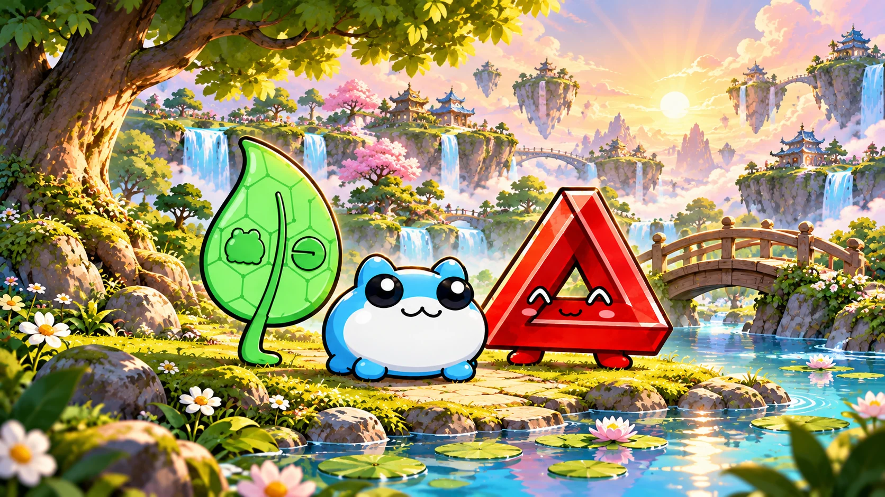

Look · Listen · Breathe
Blue Toby’s First Wait
Take a little quiet moment with your Tobyworld friends. Read together, and move on whenever you are ready.

Moment 1 of 4
Look with Taboshi
Taboshi notices the little green things by the pond. Look around you. Can you find something green? Tell your reading buddy what you see.
For grown-ups
This self-paced activity is an original family adaptation of Tobyworld’s themes of noticing, kindness, and patience. There is no timer to beat. Children can pause, skip a prompt, or start again.
Keep breathing comfortable and ordinary. Let your child describe their own experience; there is no right feeling or answer.
For the original lore, visit the Toadgod Lore Library.